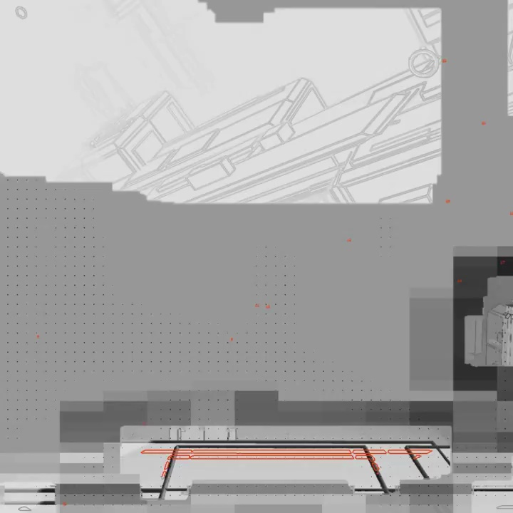
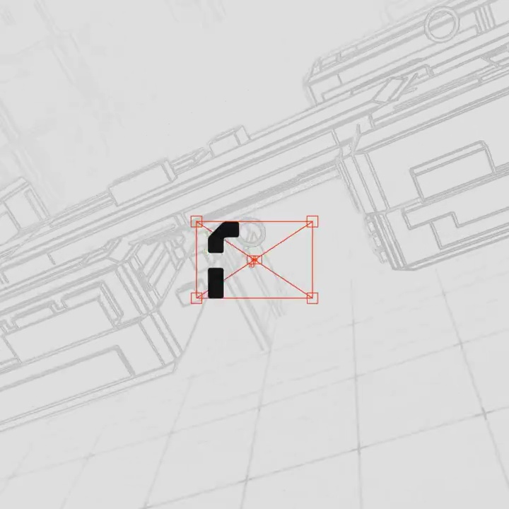
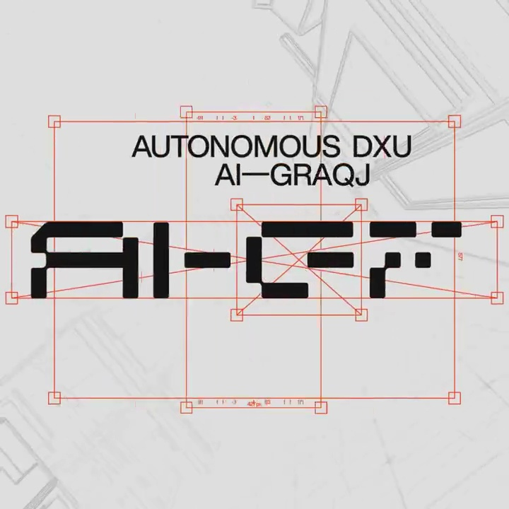
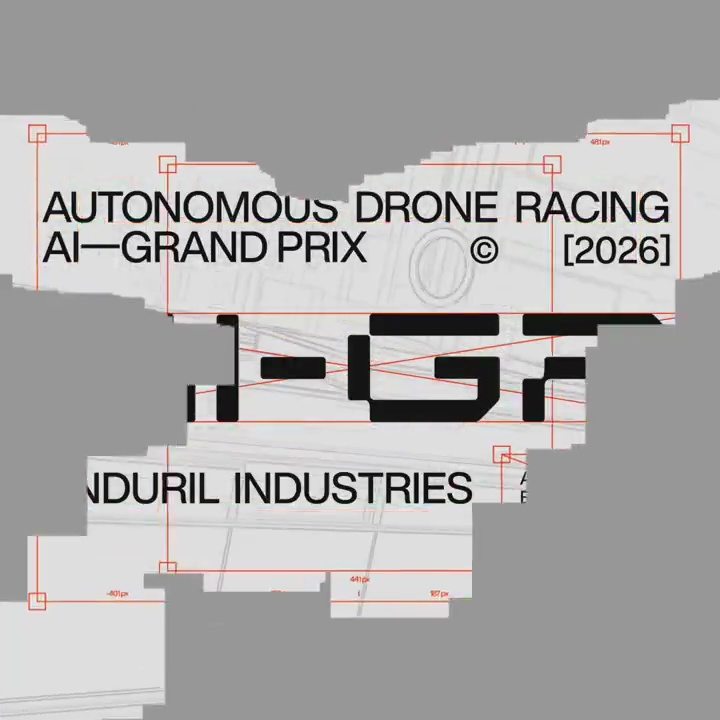
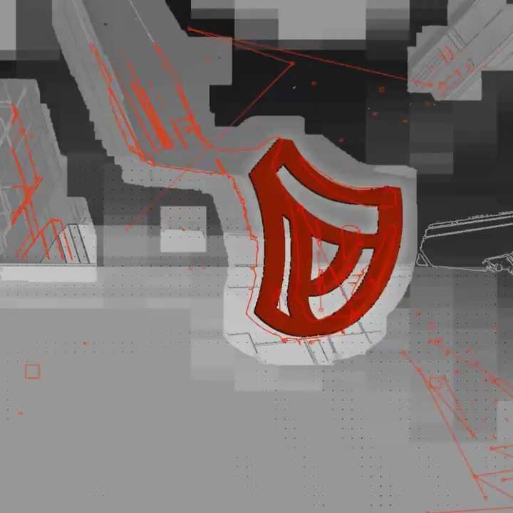

Anduril / V118
AI Grand Prix 无人机赛
黑色笔画从分散段落组合成 AI–GP，橙红控制框、交叉线和定位点随笔画一起出现。副标题和主办方上下对齐。
构图与编排 可播放 · 可替换内容
整体编排规则示例
查看 HTML 源码
<!doctype html><html lang="zh-CN"><meta charset="utf-8"><meta name="viewport" content="width=device-width,initial-scale=1"><title>AI Grand Prix 无人机赛 · sequence</title><style>html,body{margin:0;width:100%;height:100%;overflow:hidden;background:#dbdbd9}canvas{display:block;width:100%;height:100%;object-fit:contain}</style><body data-mode="sequence"><canvas width="1000" height="600"></canvas><script src="data.js"></script><script src="common.js"></script><script src="scene.js"></script><script src="bridge.js"></script></body></html>画面元素工程图底纹切割字标橙色控制框像素遮挡块三维徽标
MOTION LANGUAGE
动作与构图
局部动作 · 构图规则
01
让字标像工程零件一样就位
让字标像工程零件一样就位规则示例
查看 HTML 源码
<!doctype html><html lang="zh-CN"><meta charset="utf-8"><meta name="viewport" content="width=device-width,initial-scale=1"><title>AI Grand Prix 无人机赛 · sequence</title><style>html,body{margin:0;width:100%;height:100%;overflow:hidden;background:#dbdbd9}canvas{display:block;width:100%;height:100%;object-fit:contain}</style><body data-mode="clip" data-start="0.5" data-end="3"><canvas width="1000" height="600"></canvas><script src="data.js"></script><script src="common.js"></script><script src="scene.js"></script><script src="bridge.js"></script></body></html>黑色笔画从分散段落组合成 AI–GP，橙红控制框、交叉线和定位点随笔画一起出现。副标题和主办方上下对齐。
02
线稿与像素块承担转场
灰色技术图始终低对比；大灰块遮住画面后切到橙红立体图标。图标轮换时保持中心锚点，背景可旋转但不抢主体。
03
从赛事标题收向徽标
先留读赛事名称，再用数个旋转符号加快节奏，最后停在品牌徽标。换活动时保留工程排版、橙色点缀与硬切的工业感。
SEQUENCE
段落与节奏
点击段落，定位到上方编排示意。





画面参考 · 离散静帧
KEEP THE RELATIONSHIPS
制作其他主题
- 替换赛事名、年份与标志，沿用组装字标到三维徽标的结构。
制作约束
工程图底纹 / 切割字标 / 橙色控制框 / 像素遮挡块 / 三维徽标
- 黑色笔画从分散段落组合成 AI–GP，橙红控制框、交叉线和定位点随笔画一起出现。副标题和主办方上下对齐。
- 灰色技术图始终低对比；大灰块遮住画面后切到橙红立体图标。图标轮换时保持中心锚点，背景可旋转但不抢主体。
- 先留读赛事名称，再用数个旋转符号加快节奏，最后停在品牌徽标。换活动时保留工程排版、橙色点缀与硬切的工业感。